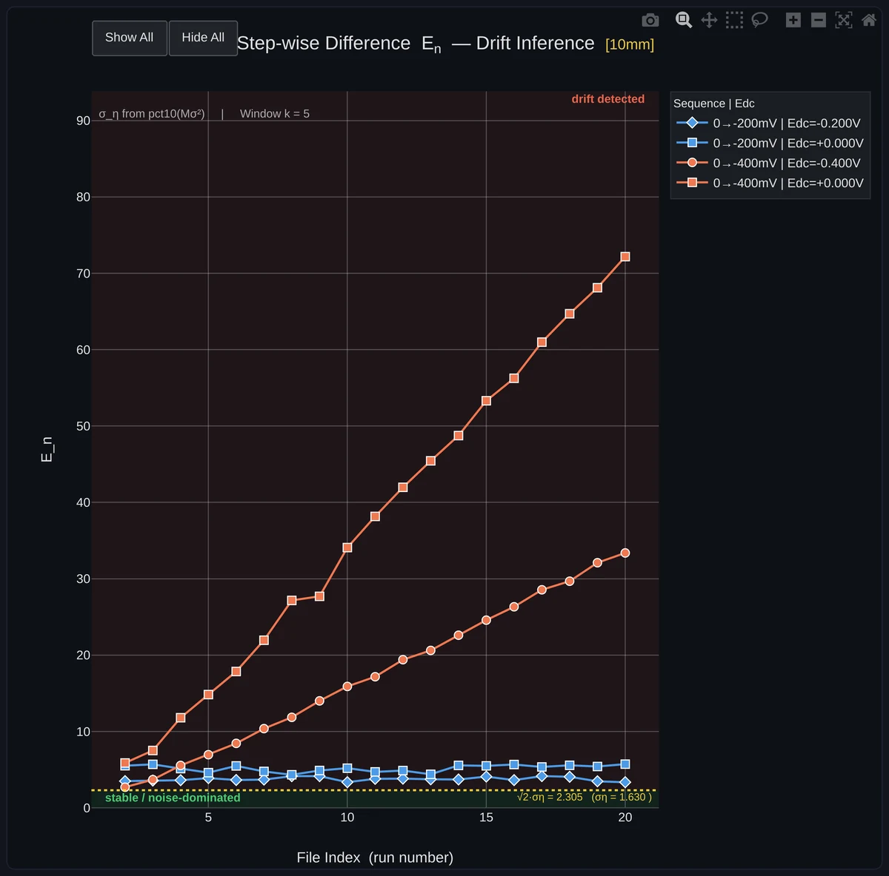

Measurement work produces spreadsheets nobody wants to read. These are the small interfaces I build around that data — plan the experiment, see the design space, catch the runs that were never going to work before the lab time is spent.
My master's thesis runs impedance spectroscopy over salt solutions, which means deciding — before touching the bench — which combinations of NaCl, KCl and MgCl₂ are actually worth measuring. This tool builds that experiment design in the browser, computes the chemistry behind each run, and shows the whole design space at once.
Design of experimentsImpedance spectroscopyInteractive plotsCSV exportLive app
The real app, embedded — set the design parameters and the grid regenerates as you go.
What it does
Three-axis full-factorial design. Pick salt A, salt B and the water volume, give each a range and a number of levels, and the complete run grid is generated for you.
Chemistry, not just numbers. Every run carries its molarity and ionic strength, computed from the masses you entered — in grams, millimolar or molar, whichever you think in.
Saturation guard. Runs that exceed the solubility limit at 20 °C are flagged and drawn as red diamonds, so impossible mixtures are visible in the design space rather than discovered at the bench.
Custom salts and custom runs. Any salt can be defined with its molecular weight and solubility; one-off runs can be added by hand alongside the generated grid.
Colour by what matters. The design space can be coloured by ionic strength, total molarity or a single salt's concentration.
Run sheet out. The finished table downloads as CSV and goes straight to the measurement automation.
Why it exists
The thesis question is what electrolyte impedance spectra can tell us once machine learning is pointed at them — and that only works if the spectra come from a design that covers the space evenly. Building the grid in a spreadsheet was slow and silently produced mixtures that would not dissolve.
Putting it behind a GUI moved that judgement forward: the design, the ionic strength it spans, and the runs that violate solubility are all on screen before a single measurement is queued. The CSV it exports is the same run sheet the automated measuring system consumes.
Context
Built for
M.Eng. thesis — data-driven analysis of electrolyte impedance spectra
With
THWS · IMES, in collaboration with Fresenius Medical Care
Salts
NaCl, KCl, MgCl₂ — or any salt you define
Output
Run sheet as CSV, with molarity, ionic strength and saturation status
Impedance variance analysis — drift, or just noise?
Measure the same cell twenty times over and no two spectra land on top of each other. Part of that spread is the instrument, part of it is the cell genuinely changing — and only the second kind is a result. This tool estimates the noise floor from the measurements themselves and judges every run against it.
EIS repeatabilityDrift inferenceNoise floorRuns in-browserLive app
The tool itself, running in the page at desktop width — press Load Sample & Run to put the built-in dataset through it. Reading your own folder of measurements works best in its own tab.
The analyser wants a desktop-sized window — open it in its own tab to try it. Below is a run it produced.

What comes outOne of the eight figures from the sample set. The −200 mV runs stay inside the green noise band; the two −400 mV protocols foul the electrode and climb out of it, so they are called drift rather than scatter. The threshold drawn across the band is √2·σ_η = 2.305 Ω, estimated from the runs themselves.
What it does
Takes a folder of runs. CSV or XLSX, picked by glob pattern and narrowed by channel — or the built-in set of 40 legacy runs (two bias protocols × two DC levels × two channels) to try it on.
Works in the domain the question lives in. Impedance Z, admittance Y or capacitance C, over a frequency window you set — 0.1 Hz to 10 kHz by default.
Slides a window of k ≥ 2 runs across the series, turning it into step-wise differences and change rates, which is what separates a slow drift from run-to-run scatter.
Estimates the noise floor from the data — σ_η, the √2·σ_η threshold that E_n and CR_n are judged against, and the variance threshold σ²_η — with a percentile control for where the floor is taken.
Builds eight interactive figures: step-wise difference E_n and change rate CR_n with drift inference, their weighted forms, relative errors, grand variance across real and imaginary parts, and the mega grand variance Mσ² — plus a 3D surface for the per-frequency picture.
Exports everything as standalone HTML figures, with a log of each stage of the run.
Never uploads anything. The whole analysis runs in the browser — measurement data stays on the machine it was measured on.
Why it exists
A spectrum that differs from the last one is only worth interpreting if the difference is larger than the instrument's own scatter. Deciding that by eye, across forty runs and a few hundred frequencies, is exactly the kind of judgement that gets made inconsistently at 6 pm.
So the threshold is computed instead of guessed, and every run is drawn against it. It pairs with the DoE visualiser above: that one decides which electrolytes are worth measuring, this one decides whether what came back is a real change.
Context
Built for
M.Eng. thesis — EIS repeatability & drift inference
Input
Folders of CSV/XLSX runs, glob and channel filters
Domains
Z, Y or C over a chosen frequency window
Statistics
σ_η · √2·σ_η · σ²_η, E_n, CR_n, weighted and relative forms, grand and mega grand variance
Output
8 interactive figures, a 3D per-frequency surface, standalone HTML export
Both of these are the public end of the same thesis work. The Python measurement GUIs behind them — a 24-sample impedance rig on an EVAL-AD5940ELCZ front end and the automation around it — belong to the labs they were built for, so they stay unpublished.